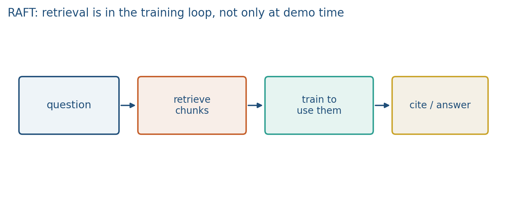
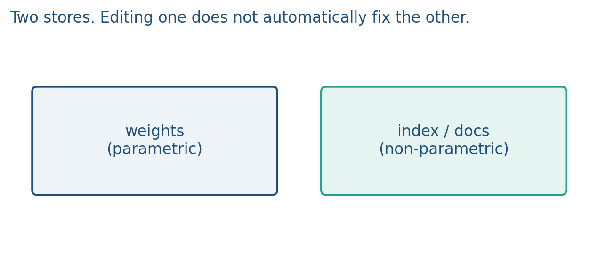
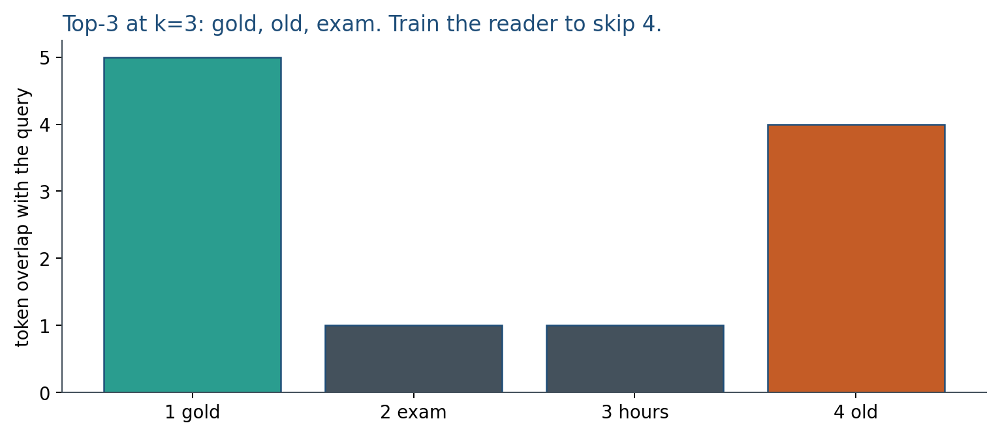

10.3 RAFT and Memory-Augmented Models
Define RAG in one page, then train the reader with gold plus distractors. Week 14 is the full stack.
These notes match the lecture slides. Use (slides) on the course hub for the deck.
Facts can live in weights (parametric) or in an external store you look up (non-parametric). RAFT here is retrieval-augmented fine-tuning: you train the model with retrieved documents in context so it learns to use them, not only to recite the pretrain snapshot.
Students have not had Week 14 yet. Before RAFT, here is RAG in one page. Week 14.1 is the full pipeline (architecture, cosine, Lewis’s sum, and the tradeoffs). Do not skip that later.
RAG (retrieval-augmented generation) means: look up relevant passages from a collection you control, put them in the prompt, then generate the answer from those passages. The language model is usually frozen. You update a fact by editing a document and re-indexing, not by retraining. The index must store vector + raw text + id so you can cite. Retrieval can miss; then generation cannot recover. That is why this hour exists: a frozen reader often ignores a good snippet. RAFT is how you train the reader.
1. What RAFT is
RAFT is retrieval-augmented fine-tuning. Vanilla RAG (the one-page primer above; the full pipeline is Week 14.1) retrieves at test time and hopes a frozen LLM attends. Domain RAFT (Zhang et al. and related recipes) builds training rows that look like the test stack: question, a set of snippets (some relevant, some distractors), and an answer that must cite or ignore on purpose. The loss is SFT on that answer. The model learns “read this, skip that.”
You are not inventing a new transformer. You are changing the training distribution for a retrieve-then-generate stack. If every training snippet is gold, the model never practices rejecting junk. Include negatives. If you never train with retrieval, editing the index will not fix a model that ignores the index. Calling any retrieve-then-generate “RAFT” is the usual mix-up: RAG is often the same stack with a frozen reader; RAFT trains the reader on the bundle.
Parametric recall versus open-book is the other half of the name. Weights are always on and hard to update (ROME, SFT, forgetting). A datastore, BM25, embeddings, or a kNN over hidden states (kNN-LM, RETRO, memorizing transformers) is memory you can edit by writing a snippet. Hybrids are the product default: parametric priors plus retrieved evidence. Hallucination often means the parametric prior won over the snippet. RAFT is how you train that fight.
2. Why we use it
Vanilla RAG at test time with a frozen SFT model often ignores the snippet. Index edits then do nothing. You changed the PDF; the reader still recites last year’s salary from pretrain weights. That failure is a reader bug, not an index bug.
Need daily-changing policy PDFs? Non-parametric plus a RAFT-style reader. Need style and instruction following? Parametric SFT/LoRA. Need to correct one biography? Try an edit and a datastore row; measure both. Prefer the PDF if the number moves every month. ROME on “Alice’s salary” would be parametric; updating a salary in a PDF and re-indexing is non-parametric.
If and gold is ranked 3rd, retrieval failed before the reader ran. Raise , fix chunking, or change overlap. If gold is in the prompt and the answer still recites the pretrain snapshot, that is RAFT’s job.
3. Architecture
Same retrieve-then-generate stack as RAG. The difference is the training rows and that changes.
Index (non-parametric). Documents, chunks, a ranker. Lab 10’s token-overlap retriever is the toy ranker. Cosine on embeddings is the grown-up version (Week 14). RAFT does not care which retriever you used; it cares that training rows look like test rows, distractors included. Overwriting a dict key (Lab 10) is a parametric cartoon, not this stack.
Bundle. Question plus top- texts . Some of those texts are gold; some are distractors or stale rows on purpose.
Reader. The same LM as SFT. Loss is next-token on the target answer given the bundle. moves.


Retrieve-then-answer is a stack: index top- prompt SFT loss on the answer. Do not mix the words. The generator is still . RAFT changed the data, then the weights; it did not add a retrieval layer inside the transformer.
4. How it works, step by step
Take a question students will type: “What is the 2026 lab late policy?” The index has four snippets:
- Gold: “Labs submitted after Sunday 11:59 pm lose 10% per day.”
- Distractor: “The exam is closed book.”
- Distractor: “Office hours are Tuesday.”
- Old: “Labs were due Friday” (wrong year).
Then:
- Retrieve top- by token overlap with the question (Lab 10). Suppose shared-token scores are 5, 1, 1, 4. Top-3: snippets 1, 4, 2. Gold and the stale row both retrieve.
- Build a training row: question + those three texts + a target answer that cites snippet 1 and ignores 4. If you only ever trained with snippet 1 alone, the model never learned to skip 4.
- SFT on the answer tokens given that bundle. Copying a distractor sentence should raise the loss; that is different from ordinary SFT on Wikipedia, where there is no open book to contradict.
- Test with the same retrieve-then-answer stack. If the reader was frozen SFT with no context, it may still say “Friday” from weights.
- Count overlap live for two snippets so retrieval is a number, not a slogan. Then ask: if gold is in the prompt and the answer is still the old salary, whose bug is that?

5. Mathematical formulas
SFT on the answer given the retrieved bundle, with containing distractors on purpose:
Toy retrieval in Lab 10 is an overlap count, not cosine. If snippet and question share a vocabulary, a cartoon score is the number of shared tokens. Rank by that score; keep top-. Four snippets with overlap and stuff ids 2 and 4. If gold is id 2, retrieval succeeded; the reader can still fail.
Week 14 will write cosine and Lewis’s sum over documents. This hour you only need: hard top- at train and at test, same shape, distractors included. RAFT did not change the retriever’s formula; it changed whether sees that formula’s output during training.
6. Positive points and negative points
Positive.
- The reader learns to use the open book instead of reciting the pretrain snapshot.
- Distractors in the bundle teach skip, not only cite.
- Facts that move every month stay in a PDF you can re-index; RAFT trains the habit of looking them up.
- Works with Lab 10’s overlap ranker or with a later dense index; the method is the training rows.
Negative.
- Still SFT: the labels are answers given the bundle, so the model can copy, including a well-written distractor.
- Needs a retriever at train time, not only at test time.
- Gold-only rows never practice skip; then junk in the top- wins at test.
- Not a new architecture. A frozen RAG reader with a better prompt is a different system.
- If gold never entered the top-, RAFT cannot recover it. That is still a retrieval miss.
When not to. Do not edit weights to fix a fact that should have been a datastore row. Do not call every retrieve-then-generate stack RAFT. If the job is style and instruction following with no corpus, stay on SFT/LoRA.
7. Teaching this note
About 35 minutes at the board: retrieve-then-answer on one question with 1 gold + 3 distractors, then parametric vs a PDF you can edit. Play Karpathy 27:43–33:32 (tool use) and mention 40:45 (custom GPTs / files as retrieval). Lab 10 section 2 is token-overlap retrieve.
Count overlap tokens live for two snippets so retrieval is a number, not a slogan. Then ask: if gold is in the prompt and the answer is still the old salary, whose bug is that?
8. Worked example
Question: “What is the 2026 lab late policy?” Index has four snippets:
- Gold: “Labs submitted after Sunday 11:59 pm lose 10% per day.”
- Distractor: “The exam is closed book.”
- Distractor: “Office hours are Tuesday.”
- Old: “Labs were due Friday” (wrong year).
Retrieve top-3 by token overlap with the question. Suppose scores (shared tokens) are 5, 1, 1, 4. Top-3: snippets 1, 4, 2. A RAFT training row is: question + those three texts + target answer that cites snippet 1 and ignores 4. If you only ever trained with snippet 1 alone, the model never learned to skip 4.
At test time the same retrieve-then-answer stack runs. If the reader was frozen SFT with no context, it may still say “Friday” from weights. That failure is not an index bug.
Overlap count is a toy retriever (Lab 10). Cosine on embeddings is the grown-up version (Week 14). RAFT does not care which retriever you used; it cares that training rows look like test rows, distractors included.
Update a salary in a PDF and re-index: you changed non-parametric memory. ROME on “Alice’s salary” would be parametric. Prefer the PDF if the number moves every month.
9. Where students get stuck
- Training RAG readers on gold-only context, then blaming the index when distractors win.
- Editing weights to fix a fact that should have been a datastore row.
- Calling any retrieve-then-generate “RAFT.” RAFT is training the reader on that bundle.
10. Video
Karpathy — Intro to Large Language Models. Play 27:43–33:32 (tools: browser, calculator, interpreter — retrieval as a tool) and nod to 40:45 (files / RAG-style customization). Pause when the model looks something up instead of “remembering.” RAFT is how you SFT that habit. Week 14 is the full RAG pipeline.
11. Practice
-
Why add distractor snippets to RAFT training rows?
-
You can fix a wrong salary in a PDF. Which memory did you update?
-
Name one failure that retrieval cannot fix if the reader was never trained to look at the context.
-
Four snippets, overlap counts . You retrieve top-. Which ids go into the prompt? If gold is id 2, did retrieval succeed?
-
A RAFT row has 1 gold and 3 distractors. The target answer quotes the gold. What should the loss do if the model copies a distractor sentence instead? Why is that different from ordinary SFT on Wikipedia?